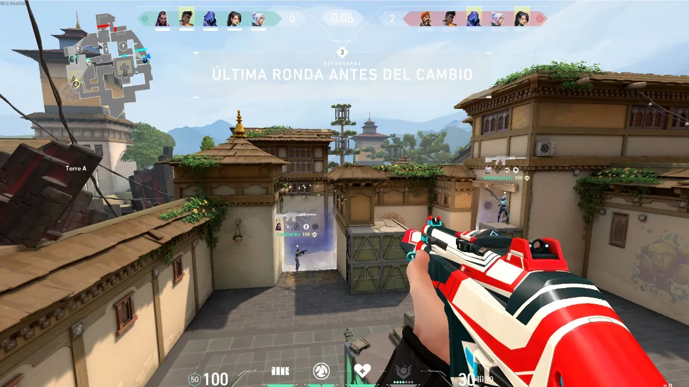

El juego se anunció por primera vez con el nombre en clave Project A en octubre de 2019.
Fue lanzado para Microsoft Windows el 2 de junio de 2020 después de su beta cerrada lanzada el 7 de abril de 2020
Valorant se inspira en la serie de videojuegos de disparos táctico Counter-Strike y toma prestadas varias mecánicas,
como el menú de compra, los patrones de spray y la imprecisión al moverse
